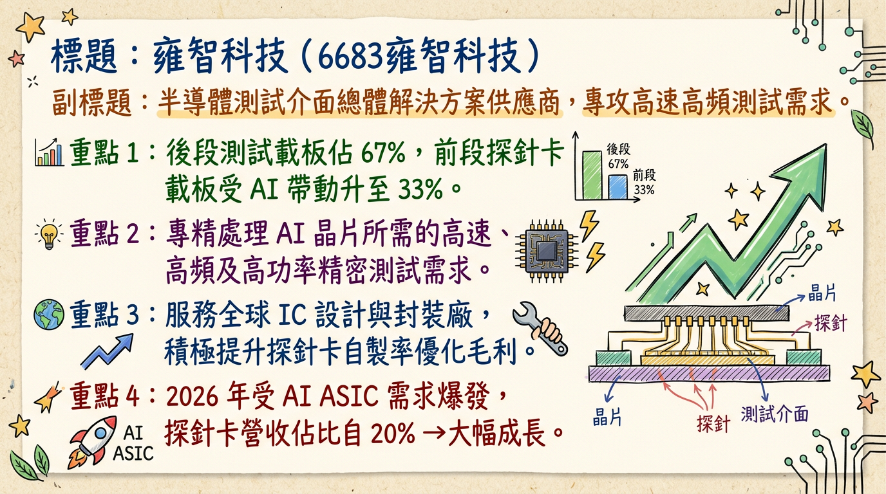
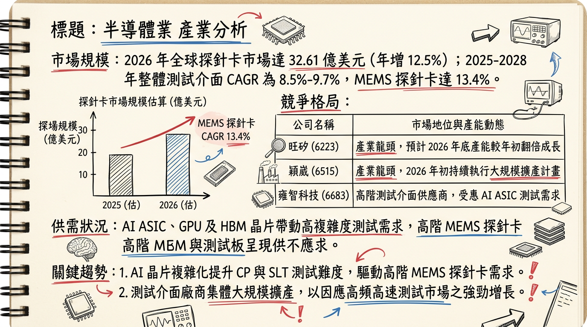
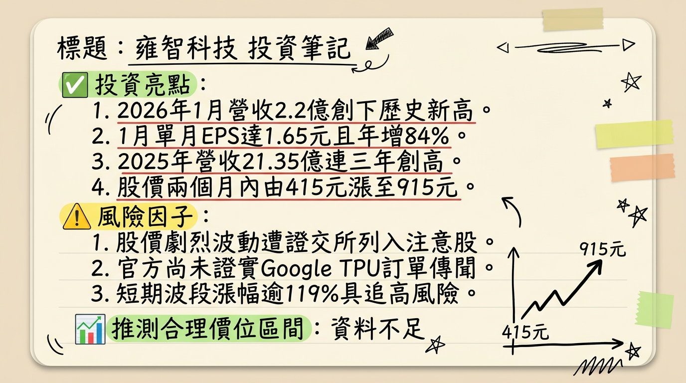

6683 雍智科技 深度研究報告
一句話摘要
雍智科技受惠於 AI ASIC 與 Wi-Fi 7 升級浪潮，2026 年進入探針卡（Probe Card）規模化獲利爆發期，營收與 EPS 均有望挑戰歷史新高。
公司概覽
雍智科技為台灣半導體測試介面龍體供應商，主要負責測試載板的設計、製造與組裝。其核心競爭力在於處理高速、高頻及高功率的晶片測試需求，並成功切入先進封裝（CoWoS/Chiplet）供應鏈。
業務產品線與營收結構 (2025 Q4 基準)
| 產品線 | 應用說明 | 營收占比 |
|---|
| 前段測試 (CP) | 晶圓探針卡載板 (Probe Card Carrier Board) | 33% |
| 後段測試 (FT/SLT) | IC 測試板 (Load Board)、系統級測試板 | 約 50% |
| 老化測試 (Burn-in) | 老化測試板 (Burn-in Board) | 約 12% |
| 其他服務 | 測試插座 (Socket) 及維修服務 | 約 5% |
核心競爭優勢
高階設計能力： 具備 80 層以上多層板（Load Board）佈線設計技術，優於多數純探針卡同業。
大客戶綁定： 深耕聯發科（MTK）、瑞昱（Realtek）與世芯-KY。在台系 IC 設計端滲透率高，能第一時間參與新案研發。
在地化佈局： 上海廠於 2025 Q4 量產，提供中國客戶一條龍服務；美國聖荷西據點則就近服務北美 CSP 客戶。
財務分析
近 6 個月營收趨勢表格
| 月份 | 營收 (億元) | 月增率 MoM | 年增率 YoY | 備註 |
|---|
| 2026/01 | 2.20 | +16.23% | +46.68% | 歷史單月新高 |
| 2025/12 | 1.89 | -2.79% | +2.70% | |
| 2025/11 | 1.95 | -0.41% | +17.93% | |
| 2025/10 | 1.96 | +5.78% | +20.63% | |
| 2025/09 | 1.85 | -0.30% | +19.19% | |
| 2025/08 | 1.86 | +0.26% | +23.67% | |
年度 EPS 趨勢
- 2024 (實際)： 17.69 元
- 2025 (預估)： 15.0 - 15.2 元 (受匯損及探針外購成本影響)
- 2026 (法人預估)： 25.56 元 (預期年增率逾 70%)
法說會重點
- 管理層 Guidance (2025/10/23)： 總經理劉安炫指出 2026 年營收維持「雙位數增長」，且因 MEMS 探針卡規模化，毛利率必將優於 2025 年。
- 訂單能見度： 目前能見度已達 2026 年下半年，主要動能來自天璣 9400 系列及網通 Wi-Fi 7 晶片測試需求。
- 產能動態： 已完成竹北昌益園區搬遷，研發與生產空間大幅擴展，足以應對 2026 年 AI 專案爆發。
券商觀點
目標價整理表格
| 券商名 | 目標價 | 評等 | 日期 | 備註 |
|---|
| 理財週刊/法人共識 | 552 元 | 看多 | 2026/02/12 | 達標，進入高溢價區 |
| CMoney 研究員 | 615 元 | 買進 | 2026/02/04 | 達標 |
| 康和證券 | 510 元 | 看多 | 2025/12/24 | 已反映 |
| 市場共識最新區間 | 900 - 1000 元 | 維持積極 | 2026/02/26 | 反映 2026 EPS 25.56 元 |
財報深度分析
近 5 季利潤率趨勢
| 季度 | 毛利率 (%) | 營業利益率 (%) | 稅後淨利率 (%) | EPS (元) |
|---|
| 2025 Q3 | 45.31 | 24.92 | 25.00 | 5.11 |
| 2025 Q2 | 43.28 | 26.50 | 6.02 | 1.21 |
| 2025 Q1 | 46.30 | 23.02 | 22.48 | 3.76 |
| 2024 Q4 | 58.35 | 28.63 | 28.40 | 5.01 |
| 2024 Q3 | 54.86 | 31.84 | 23.94 | 3.99 |
- 存貨分析： 2025 Q3 存貨天數由 195 天下降至 168.12 天，顯示去化速度加快。
- 資本支出： 2025 Q3 加大至 2.76 億元，主要用於高階測試設備與上海廠擴充。
股權異動
- 2026/02/25： 董事劉安炫及經理人吳興仁申報轉讓（共 20 張）至信託專戶，屬於限制員工權利新股之股權信託，並非大股東出脫，屬人才留用之利多。
- 資本結構： 目前無發行可轉債（CB），負債比率極低，財務穩健。
產業分析
全球探針卡市佔率 (2025)
| 排名 | 公司 | 總部 | 市佔率 |
|---|
| 1 | FormFactor | 美國 | 24% |
| 2 | Technoprobe | 義大利 | 21% |
| 3 | MJC | 日本 | 12% |
| 4 | 旺矽 (MPI) | 台灣 | 6.5% |
| 中堅 | 雍智科技 | 台灣 | 約 1.5% - 2% |
台灣同業競爭比較
| 公司 | 核心強項 | 2026 預估毛利率 | 2026 預估 EPS |
|---|
| 雍智科技 | 測試板設計/AI ASIC | 45% - 48% | 25.56 元 |
| 旺矽 | MEMS 探針卡/量產 | 52% - 55% | 45 - 50 元 |
| 穎崴 | 測試座 (Socket) | 43% - 46% | 40 - 45 元 |
| 精測 | 垂直整合/探針頭 | 50% - 53% | 18 - 22 元 |
近期催化劑
- 【利多】2026/02/25： 自結 1 月 EPS 1.65 元（年增 84%），獲利動能優於市場預期。
- 【利多】2026/02/24： 市場傳出透過聯發科切入 Google 下一代 TPU 測試供應鏈。
- 【利多】AI PC/手機： 天璣 9400 出貨強勁，帶動測試時程（Test Time）增加。
- 【風險】估值修正： 2 月股價觸及 915 元，短期本益比（PE）已反應 2026 成長預期。
⭐ 成長動能時間軸
- 2025 Q4： 上海廠正式運作，開始承接中國在地化封測客戶訂單。
- 2026 Q1： AI 手機晶片（聯發科天璣系列）SLT 測試板大量拉貨，1 月營收創歷史新高。
- 2026 Q2： 北美 CSP 客戶（Google/Amazon 相關）ASIC 測試案量發酵，美國市場營收目標翻倍。
- 2026 H2： MEMS 探針頭自製率提升，學習曲線進入平穩期，毛利率預計挑戰 48% 以上。
2026 展望
1.
AI ASIC 純度高： 受惠世芯、創意等設計服務公司新案。
2. Wi-Fi 7： 網通晶片升級帶動測試板層數與單價（ASP）提升。
- 主要風險： 終端消費性電子（手機）復甦若不如預期；地緣政治影響美系元件取得成本。
投資結論
獲利轉折點： 2025 年的毛利陣痛與匯損已過，2026 年是營收與獲利「雙重爆發」的一年。
產能就緒： 竹北新廠與上海廠將於 2026 年進入營運高峰，規模經濟顯現。
目標價建議： 基於 2026 年 EPS 25.56 元，給予 35-40 倍 PE。
* 合理區間：895 - 1,020 元。
* 操作建議： 近期漲幅已大，若回測 800-830 元區間支撐不破，可視為長期佈局點。
本報告由 AI 自動產生，資料來源為公開網路資訊，僅供參考，不構成投資建議。產生時間：2026-03-01 21:31
📊 資訊卡


